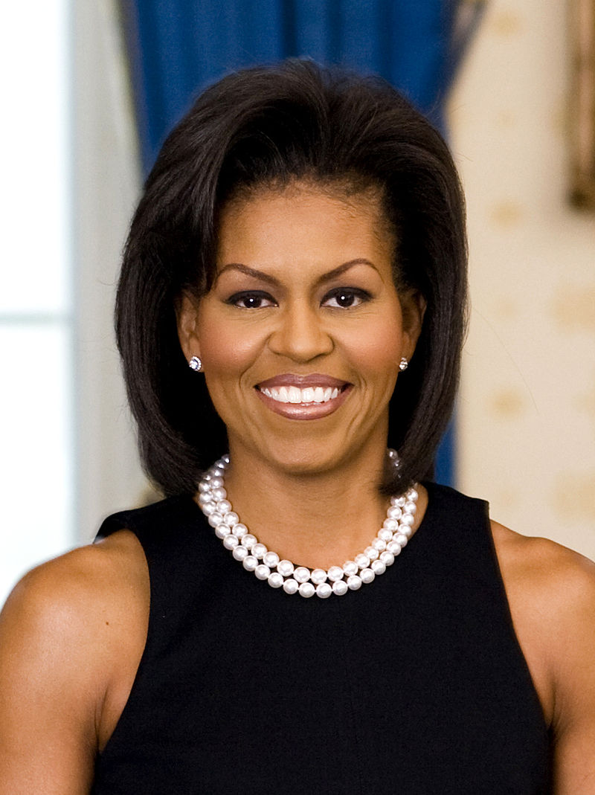

An American Attorney and author who served as the First Lady of The United States Of America from 2009 -2017
Michelle LaVaughn Robinson Obama (born January 17, 1964) is an American attorney and author who served as the first lady of the United States from 2009 to 2017. She was the first African-American woman to serve in this position. She is the wife of former President Barack Obama.
Raised on the South Side of Chicago, Illinois, Obama is a graduate of Princeton University and Harvard Law School. In her early legal career, she worked at the law firm Sidley Austin where she met Barack Obama. She subsequently worked in nonprofits and as the associate dean of Student Services at the University of Chicago as well as the vice president for Community and External Affairs of the University of Chicago Medical Center. Michelle married Barack in 1992, and together they have two daughters.
Obama campaigned for her husband's presidential bid throughout 2007 and 2008, delivering a keynote address at the 2008 Democratic National Convention. She has subsequently delivered acclaimed speeches at the 2012, 2016, and 2020 conventions. As first lady, Obama served as a role model for women and worked as an advocate for poverty awareness, education, nutrition, physical activity, and healthy eating.
Michelle Obama
Her favourite quote “Just one small positive thought in the morning can change your whole day.”
Timeline
Obama campaigned for her husband's presidential bid throughout 2007 and 2008, delivering a keynote address at the 2008 Democratic National Convention
As first lady, Obama served as a role model for women and worked as an advocate for poverty awareness, education, nutrition, physical activity, and healthy eating. She supported American designers and was considered a fashion icon.
In 2020, Obama topped Gallup's poll of the most admired woman in America for the third year running.
Robinson pursued professional study, earning her Juris Doctor (J.D.) degree from Harvard Law School in 1988
At Harvard, Robinson participated in demonstrations advocating the hiring of professors who were members of minority groups.
She is the third first lady with a postgraduate degree, after her two immediate predecessors, Hillary Clinton and Laura Bush.
In 1991, she held public sector positions in the Chicago city government as an Assistant to the Mayor, and as Assistant Commissioner of Planning and Development.
In 1993, she became executive director for the Chicago office of Public Allies, a non-profit organization encouraging young people to work on social issues in nonprofit groups and government agencies.
Obama campaigned for her husband's re-election in 2012. Beginning in 2011, Obama became more politically active than she had been since the 2008 election, though avoided discussions about the re-election bid.